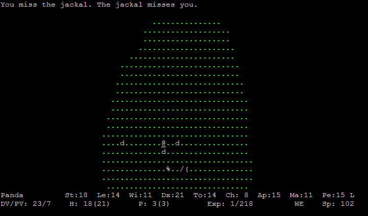
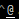

- Demonstration
- ADOMs history
- Controls
- Our oppinion
Demonstration
ADOM
Ancient Domains of Mystery
ADOM is created by a German man Thomas Biskup. He made a Roguelike-gamestyled game called ADOM. The first version came out in year 1994 and the newest version of ADOM came out in year 2002.
This is how ADOM looks.
Goal of the game
Characters main goal is to collect every Ancadian element (fire,water,air,earth and mana) and make it into chaos orb, with that you can close the chaos gates before the Ancardia gets over run by chaos. By doing that you win the game.
You can also win the game trought more challenging way and go trought the chaos gate and kill Chaos God.
There are plenty characters and that makes the game a lot more interesting.
Races:
| Human
Humans are fairly generic. They have average stats, with only Learning above average, good
equipment, and gain levels quickly. They perform decently with any class, but are not the best with any.
Granted Skills: Food preservation, Haggling, Swimming Starting alignment: Neutral Level Advance: Fast Lifetime: Average |
|
Troll
Trolls are huge, stupid creatures that like to eat the other sentient races. Trolls heal quickly but need
to eat a lot of food. They need much more experience to level than the others. They have excellent Strength
and Toughness and poor mental stats. They make fearsome Barbarians, and are suited to other fighting
classes.
Granted Skills: Athletics, Bridge building , Food preservation, Gemology, Mining Starting alignment: Chaotic Level advance: Very slow Lifetime: Very short |
|
High Elf
High elves are frivolous and love nature. Thanks to their high agility, they make excellent Archers;
their magical ability also makes them capable spellcasters, even if the class is not specifically centered on
casting, such as the Healer. Granted skills: Dodge, Listening, Literacy, Stealth Starting alignment: Lawful Level advance: Fast Lifetime: Very long |
|
Grey Elf
Aloof, arrogant, and physically weak, but stunningly beautiful, Grey Elves are the most magically-
oriented race. They make powerful Wizards and good Archers.
Granted skills: Dodge, Listening, Literacy, Stealth Starting alignment: Neutral Level advance: Average Lifetime: Very long |
|
Dark Elfx
Dark Elves are cruel underground denizens that specialize in stealth and magic. They are excellent
Rangers and Archers, but also make surprisingly adept Beastfighters and Paladins. They are not well-liked
among the other races, and despised by dwarves.
Granted skills: Alertness, Find weakness, Stealth Starting alignment: Chaotic Level advance: Average Lifetime: Very long |
|
Dwarf
Dwarves are a short, stocky race who dwell in underground caverns. Physically strong and tough and
often heavily armored, while low on Mana, they make excellent Fighters, Paladins and Weaponsmiths, but can
do well with any class, even Wizards.
Granted skills: Detect traps, Metallurgy, Mining, Smithing Starting alignment: Lawful Level advance: Slow Lifespan: Long |
|
Gnome
Gnomes live in rolling hills, are magically adept but still tough, and are deadly shots with crossbows.
They are good Archers, Priests, and Elementalists.
Granted skills: Gemology, Listening, Mining, Pick Pockets, Ventriloquism Starting alignment: Neutral Level advance: Very fast Lifespan: Long |
|
Hurtling
Hurthlings are the smallest race, and are generally not prone to adventure. They are not strong,
but sturdy, and very dextrous. They make good Thieves, Monks, Archers and Assassins.
Granted skills: Archery, Cooking, Food preservation, Gardening, Stealth Starting alignment: Lawful Level advance: Very fast Lifespan: Above average |
|
Orc
Orcs are a hateful, evil race that enjoys killing and pillaging. They are excellent Fighters and Barbarians.
They also make surprisingly good Paladins and Priests.
Granted skills: Backstabbing, Find Weakness, Metallurgy, Mining Starting alignment: Chaotic Level advance: Slow Lifespan: Average |
|
Darkeling
Drakelings are cold-blooded humanoids who are related to dragons and can breathe acid.
Physically strong and tough, they are good Fighters but can excel at any class due to a low number of
weaknesses. They are a popular choice for Mindcrafters.
Granted skills: Alertness, Food preservation, Music, Swimming Starting alignment: Neutral Level advance: Slow Lifespan: Average |
Classes:
| Fighter |

plaplapla
|
| Paladin |

plaplapla
|
| Ranger |

plaplapla
|
| Thief |

plaplapla
|
| Assasin |

plaplapla
|
| Wizard |

plaplapla
|
| Priest |

plaplapla
|
| Bard |

plaplapla
|
| Monk |

plaplapla
|
| Healer |

plaplapla
|
| Weaponsmith |

plaplapla
|
| Archer |

plaplapla
|
| Merchant |

plaplapla
|
| Farmer |

plaplapla
|
| Mindcrafter |

plaplapla
|
| Barbarian |

plaplapla
|
| Druid |

plaplapla
|
| Necromancer |

plaplapla
|
| Elementalist |

plaplapla
|
| Beastfighter |

plaplapla
|
ADOMs history
ADOMs first versions name was Ancient Dungeons of Mystery. And it had a lot less detail than the newest version now. First versions game area was just only one cave just like in Rogue and NetHack. After years of developing the game is now huge. Thomas Biskup said that he wont update ADOM anymore but he has been working on a JADE named roguelike game that is taken place in Ancardia. First version of JADE was published in a year 2011..
Unlike many other popular roguelike games, ADOMs source code isnt open to everyone. Biskup did promise that he will publish ADOMs source code after version 1.0 is done but he changed his mind so he can keep games properties to his own and also prevent other companies to copy his work. He still agreed to license the source code to game developers if they offer enough. In a year 2009 Biskup wrote on his blog that he might be ready to publish the source code. He officially made a discussion into ADOMs forums and there was a lot of fuzz because of that.
Controls
\C means Ctrl, \M means Alt, : means that you have to enter : first, the letter after
\Ct Activate trap
a Apply skill
< Ascend stairway/Leave location
Z Cast spell
C Chat with monsters
H Change highlight mode
T Change tactic
L Check literacy
E Clean ears
c Close door
ws Continuous search
( Create short character logfile
) Create verbose character logfile
[ Create screenshot
> Descend stairway/Enter location
:W Describe weather
! Dip (something) into (potion)
:T Display available talents
A Display and quick-mark skills
B Display background
P Display bill
:b Display burden levels
= Display configuration variables
\\ Display chaos powers
@ Display character information
:c Display companions
$ Display current wealth
:g Display name of your deity
\Ce Display elapsed game time
/ Display identified items
K Display kick statistics
:k Display killed monsters
\Ml Display level map
:m Display message buffer
M Display missile statistics
:w Display monster wound status
q Display quest status
R Display recipes
x Display required experience
\Mt Display talents
V Display version
\Cw Display weapon skills
W Display weapon statistics
D Drink
d Drop item(s)
\Cd Drop items in a comfortable way
e Eat
l Examine environment
:d Extended drop
Extended pay
:u Extended use
g Give item to monster
h Handle something
i Inventory
\Ci Invoke mindcraft
\Co Issue order to companion
k Kick
\Cl Look
:Z Mark spells
I Miscellaneous equipment
n Name monster/yourself
? Online help
o Open door
p Pay
; Pick up items primitively (fast)
, Pick up items
\Cp Pick up items comfortably
_ Pray
Q Quit game
r Read
& Recall monster memory
\Cr Redraw screen
O Sacrifice
S Save and quit game
s Search
\1 Set tactics to -berserker-
\2 Set tactics to -very aggressive-
\3 Set tactics to -aggressive-
\4 Set tactics to -normal-
\5 Set tactics to -defensive-
\6 Set tactics to -very defensive-
\7 Set tactics to -coward-
:= Set variable
t Shoot/Throw missile
:s Swap position with monster
\Ca Switch auto-pickup on/off
:t Switch the dynamic display
\Ck Switch the required (more) key
\Cu Unlock door
U Use item
\Cx Use class power
m Use special ability
u Use tool
5 Wait
. Wait
F Wipe face
z Zap wand
Our opinion about the game
Markku
In my opinion the game is addictive but also hard to learn. When you start playing the game you really dont understand anything, I guess that this is the reason why most people quits the game and misses adoms finess. I got pretty far to level 10 but I died before knowing that you can save the game. the game was interesting and really challenging even if there isnt any graphically wonderful. it is interesting that how can this simple looking game be so big and there is so much to play.
Jonne
Adom is extremely hard to play because you might just die for nothing, for example walking in the forest, grass or mountains, so far I havent found the reason for deaths.
but secondly the game is really interesting when u get to know something of the game and get some stuff and levels.
Games other difficulties:
- in the game you must eat, if you dont you will die and in most
cases food is really hardly finded.
- in some cases you might get attacked by some creatures and you might not be able to retreat or
avoid the fight.
- you may find many deadly traps.
- the game isnt beginner friendly at all.
Toni
ASCII- character set using Adom is pretty good game, when you get to learn what button does what. at the begin of the game there really arent any kind of tutorial given. you start from the forest where almost everything wants you dead, this is too frustrating some times because, when you die the game ends. there is many races in the game that you can play and everything has their own talents, and you can choose to your character an profession where you get different bonuses, and when you level up you get to choose different skills that change from handling the sword to climbing.
If the player doesnt want to choose what the character will become, the player can randomly choose an character. in the game there is villages and caves to explore, you can get quests to complete from villagers. in the game you also have to care on what the character eats, if the character doesnt eat then you die for hunger, this is pesky especially when you feel like you have to eat once in a minute. in the game there is some bugs that makes it harder to play.
Gaming would improve if you could get checkpoints, because after you die you dont always want to start whole new game.
Markus
Excellent game.